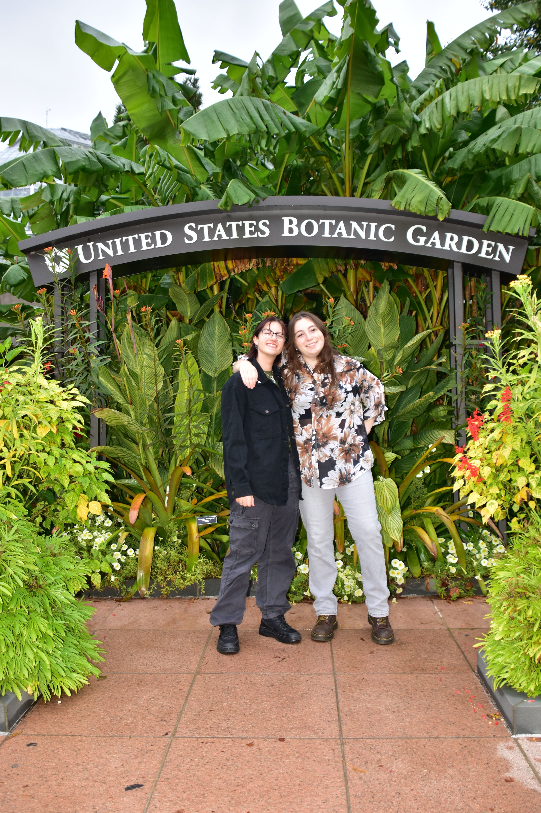

More about me
Growing up, I was always fascinated by the ways in which people interact, especially language and how it is used as a social mechanism. At my high school, there weren't many options that explored these kind of issues, so I studied Spanish and Psychology.
When I graduated, I wanted to go to a school where I could study language, linguistics and culture. I ended up applying to be a Sociology major at multiple different schools before finally choosing American, mostly for its location in the DC area.
Now, I've somewhat switched tracks. I met some Journalism majors and took a few courses before deciding that I'd rather be a writer than a professor. I feel as though I've found a home in journalism and a niche in what I write about pertaining to culture and social movements. I'm incredibly privileged to be able to learn about journalism in the nation's capital, and I hope being here will open even more doors in my career.
